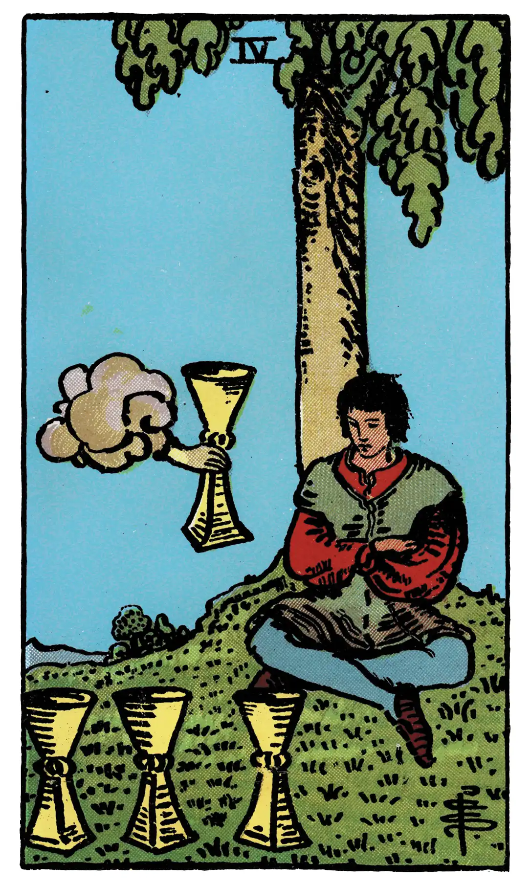

Four of Cups

A.E.W.
Upright
Weariness, disgust, aversion, imaginary vexations, as if the wine of this world had caused satiety only; another wine, as if a fairy gift, is now offered the wastrel, but he sees no consolation therein. This is also a card of blended pleasure.
Additionally
Contrarieties.
Recurrence
2 - Insomnia.
3 - A subject of reflection.
4 - Journey near at hand.
Reversed
Novelty, presage, new instruction, new relations.
Additionally
Presentiment.
Recurrence
2 - Dispute.
3 - Disquiet.
4 - Walks abroad.
S.L.M.M.
Upright
Ennui, Displeasure, Discontent, Dissatisfaction
Reversed
New Acquaintance, Conjecture, Sign, Presentiment.
Description
A young man is seated under a tree and contemplates three cups set on the grass before him; an arm issuing from a cloud offers him another cup. His expression notwithstanding is one of discontent with his environment.